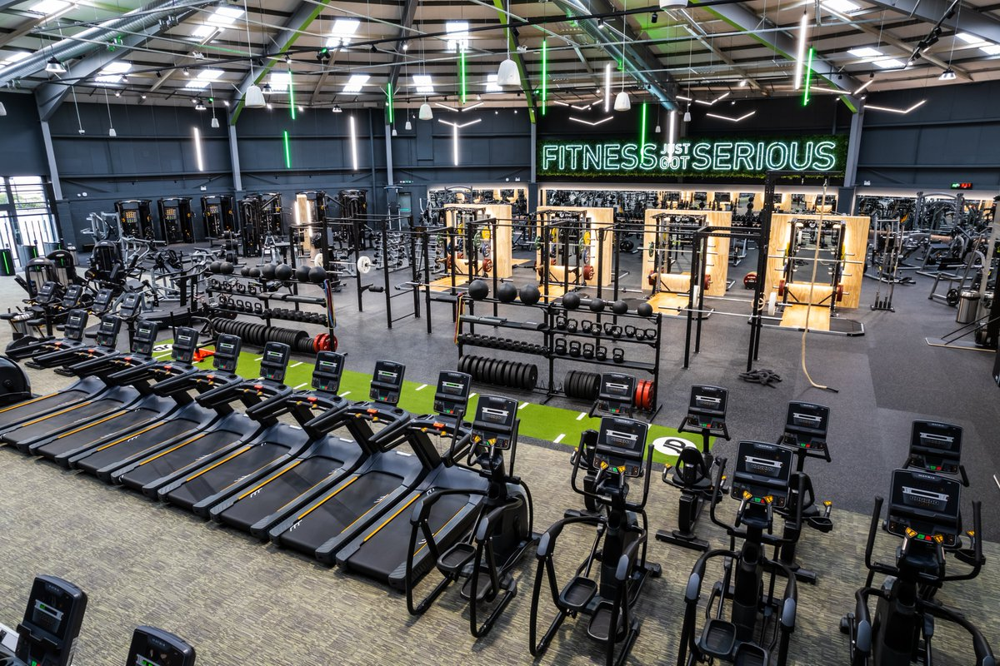

GALLERY
The strength and weight room at UlsterActive Finaghy is designed to be a space where every member of the community feels empowered to train. Whether you’re an athlete preparing for competition, a beginner learning the fundamentals, or someone simply looking to build confidence and strength, this area is built to support your journey. We’ve created an environment that is open, spacious, and welcoming, ensuring that everyone can move freely and train without intimidation or pressure. At the centre of the room are our five full squat racks, which form the backbone of the strength area. These racks are equipped for squats, bench press, deadlifts, overhead work, and a wide range of functional movements. Their layout ensures that members rarely have to wait, allowing athletes and everyday gym‑goers to train efficiently and consistently. Whether you’re following a structured strength programme or just exploring new movements, the racks provide the versatility needed for all training styles. Surrounding the racks is a full selection of fixed‑path resistance machines. These machines offer controlled, safe movement patterns that are ideal for beginners, those recovering from injury, or anyone looking to isolate specific muscle groups. They allow members to train with confidence, maintain proper form, and progress at their own pace. Each machine is chosen to support balanced, full‑body development. The free‑weight section completes the space, offering dumbbells, barbells, plates, benches, and specialty equipment suited for all levels. Whether your goal is muscle growth, strength cycles, athletic performance, or general fitness, the layout ensures you have everything you need within easy reach. UlsterActive Finaghy’s weight room is more than equipment — it’s a community hub built on inclusivity, progress, and support. No matter your background or experience, this space is designed to help you grow stronger every day.


The cardio and conditioning zone at UlsterActive Finaghy is built with one purpose in mind: to create a space where absolutely anyone can move, sweat, and feel their best. Whether you’re just beginning your fitness journey, returning after time away, or pushing your athletic limits, this area is designed to support every pace, every goal, and every level of experience. We believe cardio should be accessible, enjoyable, and adaptable, and our Finaghy location reflects that philosophy in every detail. The zone features a wide variety of machines so members can choose the style of movement that suits them best. Our ski machines offer a low‑impact, full‑body workout that challenges both strength and endurance. They’re ideal for beginners who want a smooth introduction to cardio, as well as athletes who rely on high‑intensity conditioning. The movement pattern is joint‑friendly, making it a great option for anyone looking to build stamina without unnecessary strain. Next to the ski machines, our rowing machines provide a powerful, rhythm‑based workout that engages the entire body. Rowing is one of the most effective forms of cardiovascular training, combining leg drive, core stability, and upper‑body strength. Whether you prefer long, steady rows or short interval bursts, the machines are built to accommodate all training styles. They’re perfect for members who want a challenging but low‑impact option. For those who enjoy cycling, we offer both standard bikes and assault bikes. The standard bikes are ideal for steady‑state cardio, warm‑ups, cool‑downs, or longer endurance sessions. They provide a smooth, comfortable ride suitable for all fitness levels. The assault bikes, on the other hand, are designed for high‑intensity training. They combine upper‑ and lower‑body movement, making them a favourite among athletes and anyone looking for a serious conditioning challenge. Every machine in the cardio zone is spaced to create an open, comfortable environment where members can train without feeling crowded or rushed. Whether you’re easing into fitness or pushing your limits, you’ll find a supportive atmosphere that encourages progress at your own pace. At UlsterActive Finaghy, our cardio and conditioning zone reflects our commitment to inclusivity, variety, and community. Whatever your fitness goals may be, we’ve created a space that helps you move forward with confidence and enjoyment.